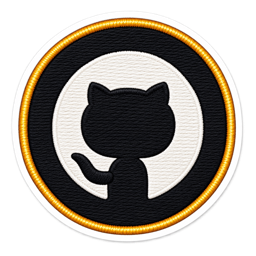

Roshan
Khandelwal
With the power of AI, I help companies grow — scaling products from early R&D to millions of requests a day. (Humans + AI) is the way forward.
Namaste.
Made in India — a billion stories, a hundred languages, and chai that fixes everything. This is where mine starts.
B.Tech, Computer Engineering.
Data structures, algorithms, AI & ML, theory of computation — and the first things I shipped.
Identity at scale.
Senior Software Developer. SSO and MFA for 50+ healthcare portals — Java Spring Boot, Akamai Identity Cloud, AWS Lambda and Redshift.
One-way ticket.
Mumbai → Syracuse, 2022. Traded monsoons for lake-effect snow.
MS, Computer Engineering.
NLP, data mining, blockchain, internet security — and very long winters.
Molecules, in 3D.
An ed-tech platform with 50+ interactive 3D molecular simulations, and ML pipelines predicting protein structure from molecular dynamics.
Co-founded a startup.
Dark Store — food & drink delivery app, Top 50 in its App Store category. Hatchery incubator, NVIDIA Inception.
Teaching an AI to book your trip.
An agent that plans, books and changes flights, hotels and cars through airline systems. It's harder than it sounds — hence the face.
Up for a coffee?
Always up for a good conversation — or better, a coffee.
